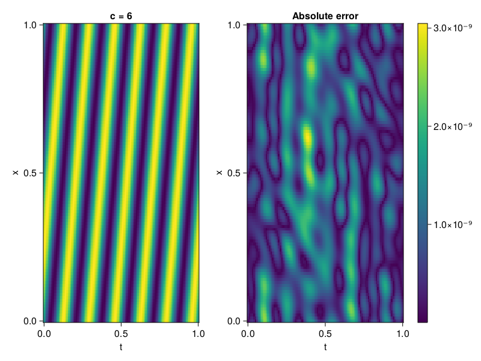

1D Convection Equation
Consider the following 1D-convection equation with periodic boundary conditions.
\[\begin{aligned} &\frac{\partial u}{\partial t}+c \frac{\partial u}{\partial x}=0, x \in[0,1], t \in[0,1] \\ &u(x, 0)=sin(2\pi x) \\ \end{aligned}\]
First we define the PDE.
using ModelingToolkit, Sophon, IntervalSets, CairoMakie
using Optimization, OptimizationOptimJL
@parameters x, t
@variables u(..)
Dₜ = Differential(t)
Dₓ = Differential(x)
c = 6
eq = Dₜ(u(x,t)) + c * Dₓ(u(x,t)) ~ 0
u_analytic(x,t) = sinpi(2*(x-c*t))
domains = [x ∈ 0..1, t ∈ 0..1]
bcs = [u(x,0) ~ u_analytic(x,0)]
@named convection = PDESystem(eq, bcs, domains, [x,t], [u(x,t)])\[ \begin{align} 6 \frac{\mathrm{d}}{\mathrm{d}x} u\left( x, t \right) + \frac{\mathrm{d}}{\mathrm{d}t} u\left( x, t \right) =& 0 \end{align} \]
Imposing periodic boundary conditions
We will use BACON to impose the boundary conditions. To this end, we simply set period to be one.
chain = BACON(2, 1, 8, 1; hidden_dims = 32, num_layers=4)MultiplicativeFilterNet(
filters = BranchLayer(
filter_1 = DiscreteFourierFeature(2 => 32), # 32 parameters, plus 64
filter_2 = DiscreteFourierFeature(2 => 32), # 32 parameters, plus 64
filter_3 = DiscreteFourierFeature(2 => 32), # 32 parameters, plus 64
filter_4 = DiscreteFourierFeature(2 => 32), # 32 parameters, plus 64
),
linear_layers = PairwiseFusion(
Base.Broadcast.BroadcastFunction{typeof(*)}(*)
layer_1 = Dense(32 => 32), # 1_056 parameters
layer_2 = Dense(32 => 32), # 1_056 parameters
layer_3 = Dense(32 => 32), # 1_056 parameters
),
output_layer = Dense(32 => 1), # 33 parameters
) # Total: 3_329 parameters,
# plus 256 states, summarysize 192 bytes.For demonstration purposes, the model is also periodic in time
sampler = QuasiRandomSampler(500, 100) # data points
strategy = NonAdaptiveTraining(1 , 500) # weights
pinn = PINN(chain)
prob = Sophon.discretize(convection, pinn, sampler, strategy)
@time res = Optimization.solve(prob, BFGS(); maxiters = 1000)u: ComponentVector{Float64}(filters = (filter_1 = (bias = [-1.0466745754403721; -0.6813016915331395; … ; 0.81684920152733; -0.7001506261397423;;]), filter_2 = (bias = [0.5457731629608258; 0.3405026171163237; … ; 0.09327155579871571; 0.6130266004921044;;]), filter_3 = (bias = [-0.7037665719877486; 0.976539017579035; … ; -0.21999413484684407; 0.1133500002073589;;]), filter_4 = (bias = [-0.6397914197712403; -0.5111832805313166; … ; -0.5594252373077268; -0.5854052151765372;;])), linear_layers = (layer_1 = (weight = [0.42743076904145855 -0.23046688660856124 … 0.3064013637213572 -0.18384395320461627; 0.4639433404205069 0.15279053261736977 … -0.15286687449163602 0.016433058852755412; … ; -0.22288518846936714 -0.25624050165910756 … -0.23277089403809256 0.23219834973762157; -0.3007935500231311 0.4274412954837916 … -0.11038795284851362 -0.1721811283203506], bias = [0.10013521467399614; 0.1375068294633959; … ; 0.13270420515846099; -0.1380436955772071;;]), layer_2 = (weight = [-0.24652291348072466 -0.07541305912525305 … 0.08235156928088752 -0.1419152813636807; -0.18390327014705676 0.3029407864491422 … 0.26987947256896155 -0.2816659513519676; … ; 0.34250780809381487 -0.3461151556950406 … 0.05579832213509702 -0.1984704371898778; 0.42867670367094396 -0.19462119424654195 … -0.18948886625081296 -0.1303596626828964], bias = [-0.0463332833267943; -0.07225784110324598; … ; -0.06462688893990194; 0.009424525385259027;;]), layer_3 = (weight = [0.17328698423767439 -0.05799733526972928 … -0.2715555486051162 -0.04812151153567826; 0.4712658620357207 -0.48979952986812775 … -0.6605258047273961 -0.028135205057458496; … ; -0.40455809323629927 -0.48987881604015465 … -0.13397156715591793 0.5663431684385187; 0.3306602259033807 0.22590109557848367 … 0.08371603902397262 -0.19925461494244695], bias = [-0.018441612299063877; -0.006572503619818231; … ; -0.07655713983122439; -0.05536572386468517;;])), output_layer = (weight = [-0.006861811371237882 -0.0110071003772857 … 0.03482633145716419 -0.05859560957437649], bias = [-0.13053774707335908;;]))Let's visualize the result.
phi = pinn.phi
xs, ts= [infimum(d.domain):0.01:supremum(d.domain) for d in domains]
u_pred = [sum(phi([x,t],res.u)) for x in xs, t in ts]
u_real = u_analytic.(xs,ts')
fig, ax, hm = heatmap(ts, xs, u_pred', axis=(xlabel="t", ylabel="x", title="c = $c"))
ax2, hm2 = heatmap(fig[1,end+1], ts,xs, abs.(u_pred' .- u_real'), axis = (xlabel="t", ylabel="x", title="Absolute error"))
Colorbar(fig[:, end+1], hm2)
display(fig)
We can verify that our model is indeed, periodic.
xs, ts= [infimum(d.domain):0.01:supremum(d.domain)*2 for d in domains]
u_pred = [sum(phi([x,t],res.u)) for x in xs, t in ts]
fig, ax, hm = heatmap(ts, xs, u_pred', axis=(xlabel="t", ylabel="x", title="c = $c"))
display(fig)